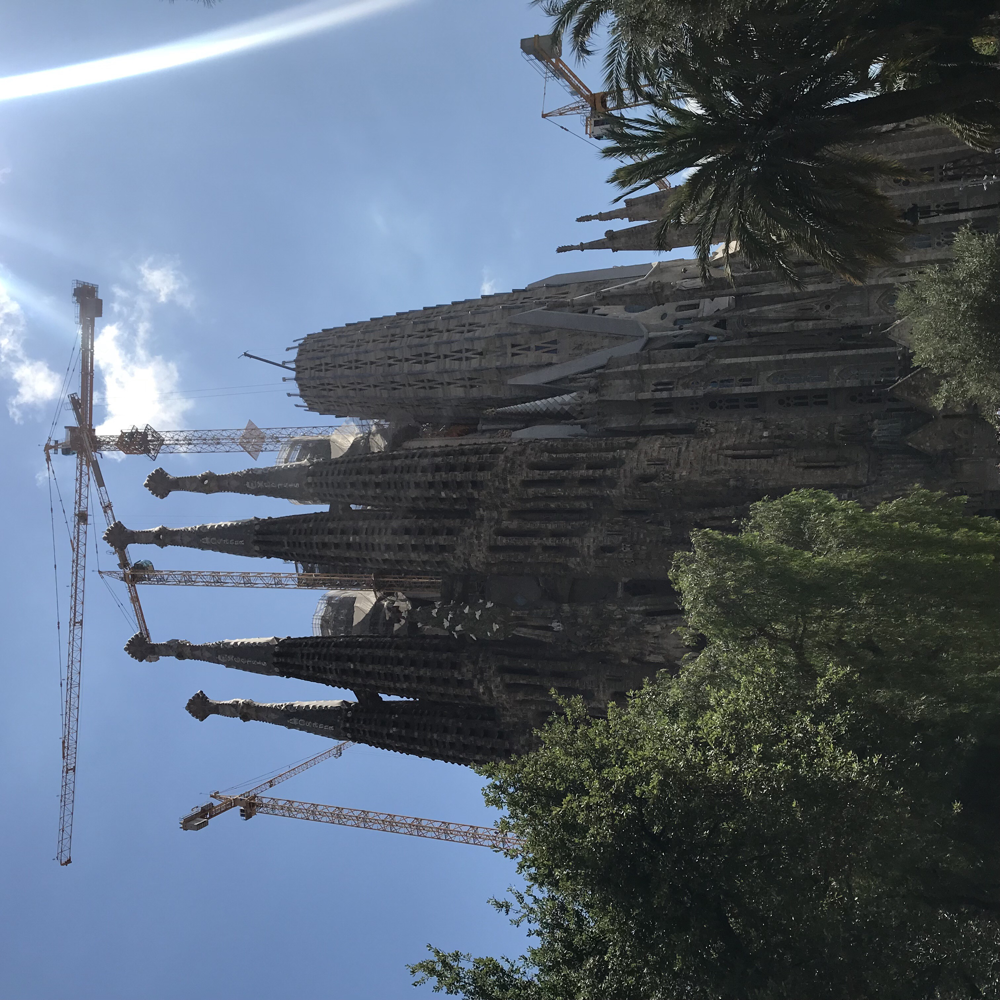
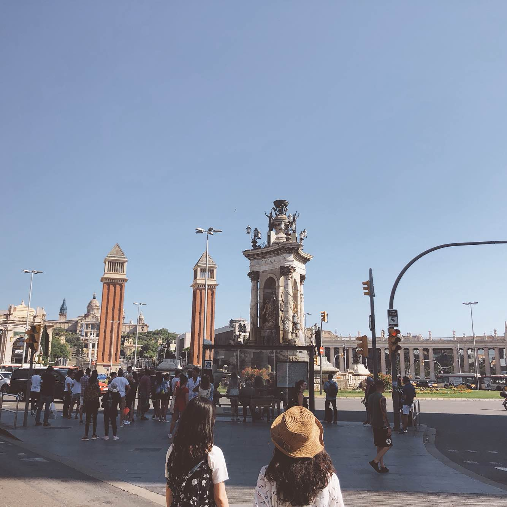

|  |  |
-
Day 1
Arrival in Barcelona, Dinner
-
Day 2
Gaudi Tour : Casa Mila&Casa Batllo - Park Guell - Montjuïc Hill - Barceloneta Beach - Sagrada Familia
-
Day 3
Shopping, Cooking class
-
Day 4
Shopping, Night View Tour
-
Day 5
Montserrat